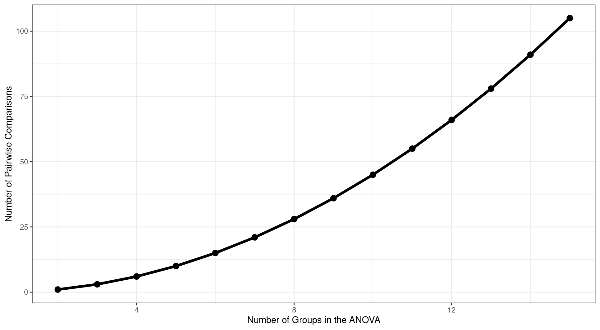
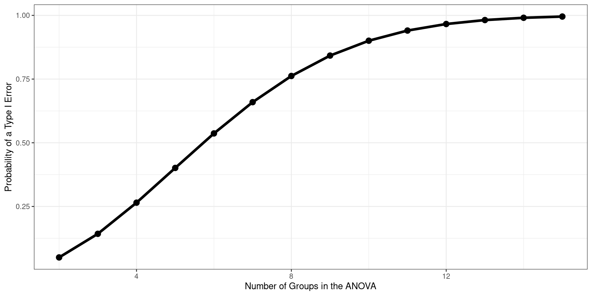
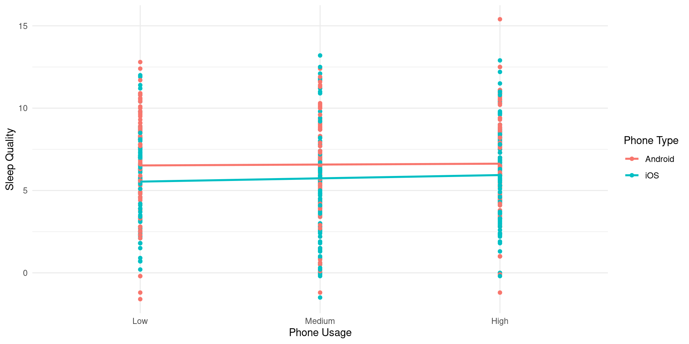
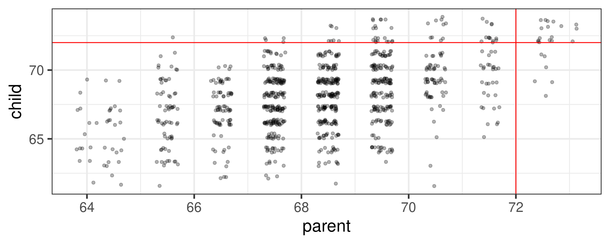

Identify a paper that performs a statistical analysis that we have (or will) talk about in class.
If it is outside of what we’ve talked about, reach out to me to see if it may still work
Describe the main question, the research design, the analysis and interpretation
Provide a brief reflection on the match/mismatch of research design to analytic decision as well as anything else in the paper that could bias the results
More structured instructions to be posted on myCourses
Last Class
t-tests
Professors presentation didn’t work, so we did more live coding (and he probably confused everyone)
Since there are 2 header rows, we need to only include the first one. To do that, we have to “skip” the first two and then give the names of the columns back to the data.
We also need to specify what the missing values are. Typically we have been working with NA which is more traditional. However, missing values in this dataset are DK/REF and a blank. This will need to be specified in the import function (used this website)
# get the names of your columns which is the first rowghost_data_names <-read_csv(here("lectures", "data", "ghosts.csv")) %>%names()# import second time; skip row 2, and assign column names to argument col_names =ghost_data <-read_csv(here("lectures", "data", "ghosts.csv"),skip =2,col_names = ghost_data_names,na =c("DK/REF", "", " ") ) %>%clean_names()
Running the Test
Let’s take a look at Income by Political Affiliation
aov1 <-aov(income ~ political_affiliation, data = ghost_data)summary(aov1)
Df Sum Sq Mean Sq F value Pr(>F)
political_affiliation 2 44252069121 22126034561 4.007 0.0189 *
Residuals 393 2170016726333 5521671059
---
Signif. codes: 0 '***' 0.001 '**' 0.01 '*' 0.05 '.' 0.1 ' ' 1
604 observations deleted due to missingness
These pairwise comparisons can quickly grow in number as the number of Groups increases. With 3 (k) Groups, we have k(k-1)/2 = 3 possible pairwise comparisons.
As the number of groups in the ANOVA grows, the number of possible pairwise comparisons increases dramatically.

As the number of tests grows, and assuming the null hypothesis is true, the probability that we will make one or more Type I errors increases. To approximate the magnitude of the problem, we can assume that the multiple pairwise comparisons are independent. The probability that we don’t make a Type I error for one test is:
\[P(\text{No Type I}, 1 \text{ test}) = 1-\alpha\]
The probability that we don’t make a Type I error for two tests is:
\[P(\text{No Type I}, 2 \text{ test}) = (1-\alpha)(1-\alpha)\]
For C tests, the probability that we make no Type I errors is
\[P(\text{No Type I}, C \text{ tests}) = (1-\alpha)^C\]
We can then use the following to calculate the probability that we make one or more Type I errors in a collection of C independent tests.
\[P(\text{At least one Type I}, C \text{ tests}) = 1-(1-\alpha)^C\]
The Type I error inflation that accompanies multiple comparisons motivates the large number of “correction” procedures that have been developed.

Multiple comparisons, each tested with \(\alpha_{per-test}\), increases the family-wise \(\alpha\) level.
\[\large \alpha_{family-wise} = 1 - (1-\alpha_{per-test})^C\] Šidák showed that the family-wise a could be controlled to a desired level (e.g., .05) by changing the \(\alpha_{per-test}\) to:
The Bonferroni procedure is conservative. Other correction procedures have been developed that control family-wise Type I error at .05 but that are more powerful than the Bonferroni procedure. The most common one is the Holm procedure.
The Holm procedure does not make a constant adjustment to each per-test \(\alpha\). Instead it makes adjustments in stages depending on the relative size of each pairwise p-value.
Holm correction
Rank order the p-values from largest to smallest.
Start with the smallest p-value. Multiply it by its rank.
Go to the next smallest p-value. Multiply it by its rank. If the result is larger than the adjusted p-value of next smallest rank, keep it. Otherwise replace with the previous step adjusted p-value.
Repeat Step 3 for the remaining p-values.
Judge significance of each new p-value against \(\alpha = .05\).
Good for 3+ groups when you have more specific hypotheses (contrasts)
Two-Way ANOVA
What is a Two-Way ANOVA?
Examines the impact of 2 nominal/categorical variables on a continuous outcome
We can now examine:
The impact of variable 1 on the outcome (Main Effect)
The impact of variable 2 on the outcome (Main Effect)
The interaction of variable 1 & 2 on the outcome (Interaction Effect)
The effect of variable 1 depends on the level of variable 2
Main Effect & Interactions
Main Effect: Basically a one-way ANOVA
The effect of variable 1 is the same across all levels of variable 2
Interaction:
Able to examine the effect of variable 1 across different levels of variable 2
Basically speaking, the effect of variable 1 on our outcome DEPENDS on the levels of variable 2
Example Data
Data
We are interested on the impact of phone usage on overall sleep quality
We include 2 variables of interest: 1) Phone Type (iOS vs. Android) and 2) Amount of usage (High, Medium & Low) to examine if there are differences in terms of sleep quality
Note: It is important to consider HOW we operationalize constructs as some things we have as factors could easily be continuous variables
Code
#Generate some data# Set random seed for reproducibilityset.seed(42)n <-500# Set number of observations# Generate Type of Phone dataphone_type <-sample(c("Android", "iOS"), n, replace =TRUE)# Generate Phone Usage dataphone_usage <-factor(sample(c("Low", "Medium", "High"), n, replace =TRUE), levels=c("Low", "Medium", "High"))# Generate Sleep Quality data (with some variation)# Intentionally inflating to highlight main effectssleep_quality <-round(rnorm(n, mean =ifelse(phone_type =="Android", 5, 7) +ifelse(phone_usage =="High", 1, -1), sd =1),1)# Generate Sleep Quality data (with some variation)sleep_quality2 <-round(rnorm(n, mean =6, sd =3),1)# Create a data framesleep_data <-data.frame(phone_type, phone_usage, sleep_quality, sleep_quality2)head(sleep_data)
phone_type phone_usage sleep_quality sleep_quality2
1 Android High 5.0 12.5
2 Android Low 3.8 12.8
3 Android Medium 3.9 8.7
4 Android Medium 3.3 5.8
5 iOS Low 5.6 8.0
6 iOS High 7.8 3.6
Test Statistics
We’ve gone too far today without me showing some equations
With one way anova, we calculated the \(SS_{between}\) and the \(SS_{within}\) and were able to use those to capture the F-statistic
Now we have another variable to take into account. Therefore, we need to calculate:
# Create an interaction plot using ggplot2ggplot(sleep_data, aes(x = phone_usage, y = sleep_quality2, color = phone_type, group = phone_type)) +geom_point() +geom_smooth(method ="lm",se=FALSE) +labs(x ="Phone Usage", y ="Sleep Quality", color ="Phone Type") +theme_minimal()

Regression
Today…
Regression
Why use regression?
One equation to rule them all
Today…
Regression
Why use regression?
One equation to rule them all
Ordinary Least Squares
Interpretation
#Don't know if I'm using all of these, but including theme here anywayslibrary(tidyverse)library(rio)library(broom)library(psych)library(gapminder)library(psychTools)#Remove Scientific Notation options(scipen=999)
Overview of Regression
Regression is a general data analytic system
Lots of things fall under the umbrella of regression
This system can handle a variety of forms of relations and types of variables
The output of regression includes both effect sizes and statistical significance
We can also incorporate multiple influences (IVs) and account for their intercorrelations
Uses for regression
Adjustment: Take into account (control) known effects in a relationship
Prediction: Develop a model based on what has happened previously to predict what will happen in the future
Explanation: examining the influence of one or more variable on some outcome
Regression Equation
With regression, we are building a model that we think best represents the data at hand
At the most simple form we are drawing a line to characterize the linear relationship between the variables so that for any value of x we can have an estimate of y
\[
Y = mX + b
\]
Y = Outcome Variable (DV)
m = Slope Term
X = Predictor (IV)
b = Intercept
Regression Equation
Overall, we are providing a model to give us a “best guess” on predicting
Let’s “science up” the equation a little bit:
\[
Y_i = b_0 + b_1X_i + e_i
\]
This equation is capturing how we are able to calculate each observation ( \(Y_i\) )
\[
\hat{Y_i} = b_0 + b_1X_i
\]
This one will give us the “best guess” or expected value of \(Y\) given \(X\)
Regression Equation
There are two ways to think about our regression equation. They’re similar to each other, but they produce different outputs. \[Y_i = b_{0} + b_{1}X_i +e_i\] \[\hat{Y_i} = b_{0} + b_{1}X_i\]
The model we are building by including new variables is to explain variance in our outcome
Expected vs. Actual
\[Y_i = b_{0} + b_{1}X_i + e_i\]
\[\hat{Y_i} = b_{0} + b_{1}X_i\]
\(\hat{Y}\) signifies that there is no error. Our line is predicting that exact value. We interpret it as being “on average”
Important to identify that that \(Y_i - \hat{Y_i} = e_i\).
OLS
How do we find the regression estimates?
Ordinary Least Squares (OLS) estimation
Minimizes deviations
\[ min\sum(Y_{i} - \hat{Y} ) ^{2} \]
Other estimation procedures possible (and necessary in some cases)
In order to find the OLS solution, you could try many different coefficients \((b_0 \text{ and } b_{1})\) until you find the one with the smallest sum squared deviation. Luckily, there are simple calculations that will yield the OLS solution every time.
According to this regression equation, when \(X = 0, Y = 0\). Our interpretation of the coefficient is that a one-standard deviation increase in X is associated with a \(b_{yx}^*\) standard deviation increase in Y. Our regression coefficient is equivalent to the correlation coefficient when we have only one predictor in our model.
Estimating the intercept, \(b_0\)
intercept serves to adjust for differences in means between X and Y
otherwise, intercept is where regression line crosses the y-axis at X = 0
The intercept adjusts the location of the regression line to ensure that it runs through the point \(\large (\bar{X}, \bar{Y}).\) We can calculate this value using the equation:
vars n mean sd median min max range skew kurtosis se
log_gdp 1 33 8.74 1.24 8.41 6.85 10.76 3.91 0.21 -1.37 0.22
lifeExp 2 33 70.73 7.96 72.40 43.83 82.60 38.77 -1.07 1.79 1.39
cor(gapminder$log_gdp, gapminder$lifeExp)
[1] 0.8003474
If we regress lifeExp onto log_gdp:
r =cor(gapminder$log_gdp, gapminder$lifeExp)m_log_gdp =mean(gapminder$log_gdp)m_lifeExp =mean(gapminder$lifeExp)s_log_gdp =sd(gapminder$log_gdp)s_lifeExp =sd(gapminder$lifeExp)b1 = r*(s_lifeExp/s_log_gdp)
[1] 5.157259
b0 = m_lifeExp - b1*m_log_gdp
[1] 25.65011
How will this change if we regress GDP onto life expectancy?
(b1 = r*(s_lifeExp/s_log_gdp))
[1] 5.157259
(b0 = m_lifeExp - b1*m_log_gdp)
[1] 25.65011
(b1 = r*(s_log_gdp/s_lifeExp))
[1] 0.1242047
(b0 = m_log_gdp - b1*m_lifeExp)
[1] -0.04405086
In R
fit.1<-lm(lifeExp ~ log_gdp, data = gapminder)summary(fit.1)
Call:
lm(formula = lifeExp ~ log_gdp, data = gapminder)
Residuals:
Min 1Q Median 3Q Max
-17.314 -1.650 -0.040 3.428 8.370
Coefficients:
Estimate Std. Error t value Pr(>|t|)
(Intercept) 25.6501 6.1234 4.189 0.000216 ***
log_gdp 5.1573 0.6939 7.433 0.0000000226 ***
---
Signif. codes: 0 '***' 0.001 '**' 0.01 '*' 0.05 '.' 0.1 ' ' 1
Residual standard error: 4.851 on 31 degrees of freedom
Multiple R-squared: 0.6406, Adjusted R-squared: 0.629
F-statistic: 55.24 on 1 and 31 DF, p-value: 0.00000002263
An observation about heights was part of the motivation to develop the regression equation: If you selected a parent who was exceptionally tall (or short), their child was almost always not as tall (or as short).
Code
library(psychTools)library(tidyverse)heights = psychTools::galtonmod =lm(child~parent, data = heights)point =902heights = broom::augment(mod)heights %>%ggplot(aes(x = parent, y = child)) +geom_jitter(alpha = .3) +geom_hline(aes(yintercept =72), color ="red") +geom_vline(aes(xintercept =72), color ="red") +theme_bw(base_size =20)

Regression to the mean
This phenomenon is known as regression to the mean. This describes the phenomenon in which an random variable produces an extreme score on a first measurement, but a lower score on a second measurement.
Regression to the mean
This can be a threat to internal validity if interventins are applied based on first measurement scores.